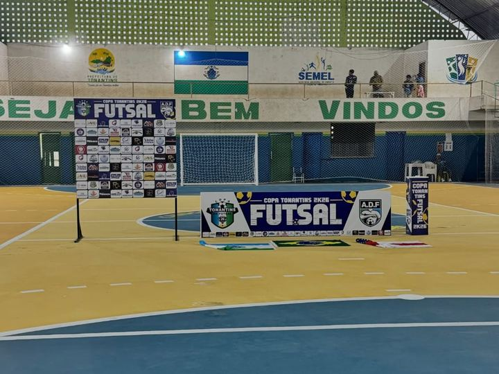
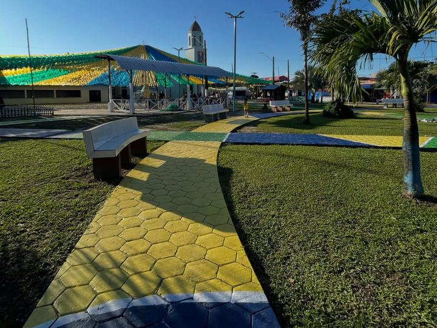
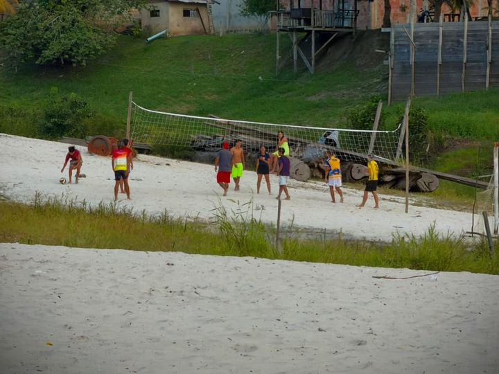

Tonantins · Amazonas
TNT
Esportes
Tabelas, súmulas e resultados dos campeonatos da cidade, organizados pela Secretaria Municipal de Esportes.
No portalSem login
- Classificação e jogos de cada campeonato
- Súmula e resultado logo que o árbitro confirma
- Artilharia e estatísticas
- Sorteio público e auditável
Dados de nascimento, documentos e fotos de atletas não aparecem (LGPD).



Quer conhecer o sistema antes? Veja a demonstração com dados de exemplo · Manual de uso · Privacidade